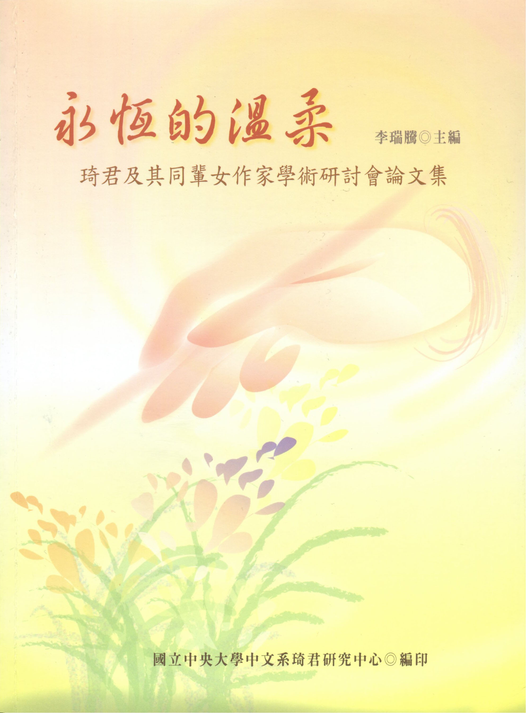

研究中心出版品
| 《永恆的溫柔：琦君及其同輩女作家學術研討會論文集》 |
|---|
|

李瑞騰主編 中央大學琦君研究中心 2006年出版 簡介：國立中央大學中文系為配合「琦君研究中心」的成立，特於二零零年十二月十五、十六日，舉辦「永恆的溫柔——琦君及其同輩女作家學術研討會」。本書集結了會議中包括應鳳凰、封德屏、朱嘉雯、汪淑珍等十四篇論文，議題包括琦君文學之探討，和同時代女作家之比較等，並特別收錄二零零四年十二月於中央大學舉辦之「琦君作品研討會」論文三篇。目次：序 / 李瑞騰 1【輯一•時代與世代】 遷台初期文學女性的聲音——以武月卿主編《中央日報‧婦女與家庭週刊》為研究領域 / 封德屏 3 琴心夢痕——琦君散文及其文學史意義 / 張瑞芬 29 試論琦君的文學史地位 / 梁竣瓘 61 五、六零年代女性小說的性別與家國話語——比較琦君與林海音 / 應鳳凰 79 林海音與琦君——編者與作者的互動考察 / 汪淑珍 101 學院女作家琦君與孟瑤的教學/學術生涯考察——兼論其文學接受情形 / 羅秀美 127 一種鄉思兩般情——論琦君與聶華苓的懷舊主題散文 / 曾萍萍 171 論《詞人之舟》的詞觀及其在遷台後台灣詞學發展上的意義 / 侯雅文 203 【輯二•探索與閱讀】 附錄資料一：琦君作品研討會暨相關資料展 程序表 441 序 / 李瑞騰11949年前後，大陸遷台一系女作家群中最年長的蘇雪林（1897-1999），相對於台灣在地作家，她略長於葉榮鐘（1900-1978）、吳濁流（1901-1976）、張我軍（1902-1955）、王白淵（1902-1965）。蘇雪林活了102歲，她於20世紀二、三十年代在中國文壇已享盛名，曾與魯迅筆戰、參與武漢文藝運動，來台後在學院及文壇皆極受尊重。 比蘇雪林小十歲的謝冰瑩（1907-2000），在大陸時期即以《從軍散記》、《一個女兵的自傳》崛起文壇，1948年來台任教台灣省立師範學院（台師大前身），致力於散文、小說的寫作。琦君小謝冰瑩十歲（1917-2006），她的養成教育在大陸，但開始從事新文藝寫作是來台以後。她同輩的女作家如林海音（1918-2001）、潘人木（1919-205）、張秀亞（1919-2001）情況大體一樣，近幾年皆已陸續作古。一般人有「蓋棺定論」的說法，但面對寫作一生的作家，恐怕很難一下子就「論定」。甚至於可以這麼說，作家真正的研究與評價，可能要從他們去世才開始；而且即便有人認為已經論定，以後還是有可能翻案。
我從大學時代起便留心當代文壇及作家時況，三十餘年來，由於長期從事文學傳媒的編輯工作，並在大學校園講授現代文學，與文壇有比較深的因緣，上述諸位。除蘇雪林外，我都曾為她們做一些事：謝冰瑩辭世之後，對她素有研究並時相往來的北京學者閻純德教授曾邀我合編《女兵謝冰瑩》（北京，人民文學出版社，2002）；國家台灣文學館委託文訊雜誌編印《張秀亞全集》（2005），我以顧問身分參與其事；林海音辭世一周年（2002），承文化資產保存及研究中心的委託，我與夏祖麗合編林海音的紀念文集《一座文學的橋》，且承辦「林海音及其同輩女作家學術研討會」，並出版論文集《霜後的燦爛》（2003）。至於潘人木，中華民國兒童文學學會正為她籌備辭世周年的研討會，我亦參與其事。 琦君最特別了，我為她在中央大學中文系成立了「琦君研究中心」。六月間，琦君以九十高齡病逝台北，記者來電訪談者甚多，他們必問一個問題：你們為什麼成立這樣一個中心？我總從琦君當年在中大中文系教新文藝談起，談對她作品的看法，談她晚年回台定居的意義，談2004年邀她重返中大校園的趣事及感人的情節等。總的一句話是「姻緣俱足」，這其中有三個人的因素很重要：一位是九歌出版社的蔡文甫先生，一位是琦君當年在中大教過、在美國很親很近的學生林秀蘭小姐，一位是琦君的夫婿李唐基先生。我面對文藝領域的公共事務，一向順勢而為，謀定而後動，人們常只看我在「行動」上積極，而我自己更重「企劃」，那是一種整體性的思考。為此，我著手草擬琦君研究中心的設立計畫書及設置辦法，並與相關人士多所磋商，然後經系務、院務會議討論通過，且依法向研發會議核備。 由於文學院空間有限，我暫將「琦君研究中心」設於「現代文學教研室」，成為所謂一基地二單位，期望將來能有獨立空間。為了要和教學研究相互結合，我擬了一個專題計畫〈琦君資料彙整及作品重探〉，向國科會提出申請，幸獲通過；同時我在研究所大膽開設「琦君文學專題研究」的課程，帶十幾位研究生一起共讀琦君。此外，我積極策畫「琦君及其同輩女作家學術研討會」。 可以這麼說，2004年12月在中大圖書館及文學院所辦的「琦君作品研討會暨相關資料展」後動念成立中心，歷經一年的籌備，於次年12月舉辦學術會議時正式宣告成立。 今年六月間琦君辭世之際，由於中心已經提供社會所需的基本資料，一時之間乃成為媒體關注的對象。為使世人更深刻認識琦君，中心決定於九歌文教基金會聯合幾家出版社及社團共同舉辦「琦君女士追思會」，前述研討會論文集將適時出版，特記本中心成立之緣起、意義及經過，以為論文集之序言，並藉此回應關心此事的朋友。 3論文集依性質分成二冊：《永恆的溫柔》與《新生代論琦君》，前者即「琦君及其同輩女作家學術研討會」的論文集，收十四篇（原議程表上，上海社科院陳青先生沒到會，我自己的論文始終未能完稿，二篇刪去），重新分輯編次；此外，2004年小型研討會的三篇論文（林秀蘭、張瑞芬、莊宜文）亦編入。後者為我所開設「琦君文學專題研究」課堂上碩士生試寫的論文，經公開發表後結集，修讀本課者另有四位博士生，我安排她們參加了前述研討會。 學術研討會假台灣師大教育大樓國際會議廳舉行，曾獲國家台灣文學館贊助部分經費；論文發表會在佛光山台北道場舉行，蒙人間福報贊助場地及餐飲，於此一併致謝。 |